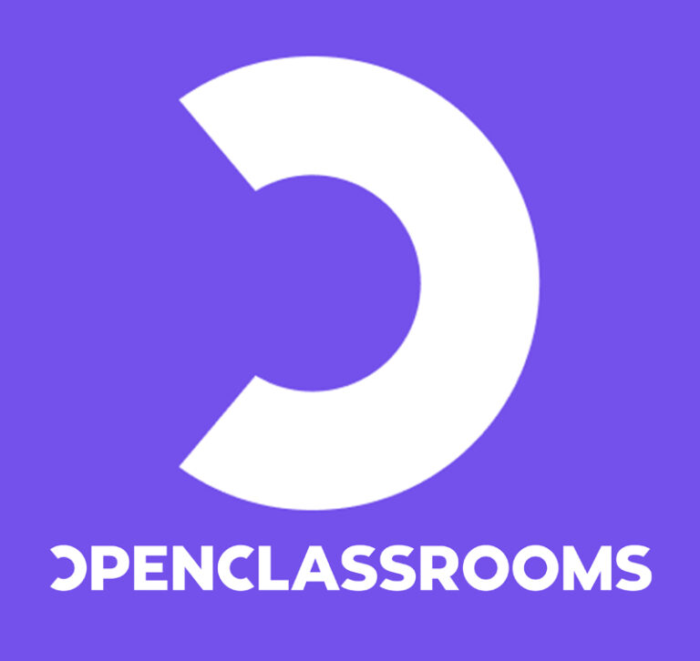
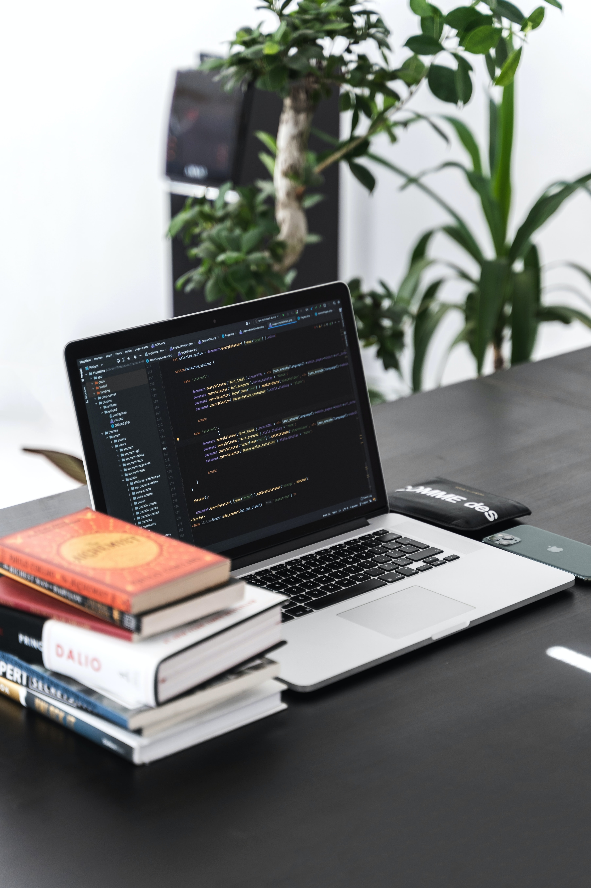
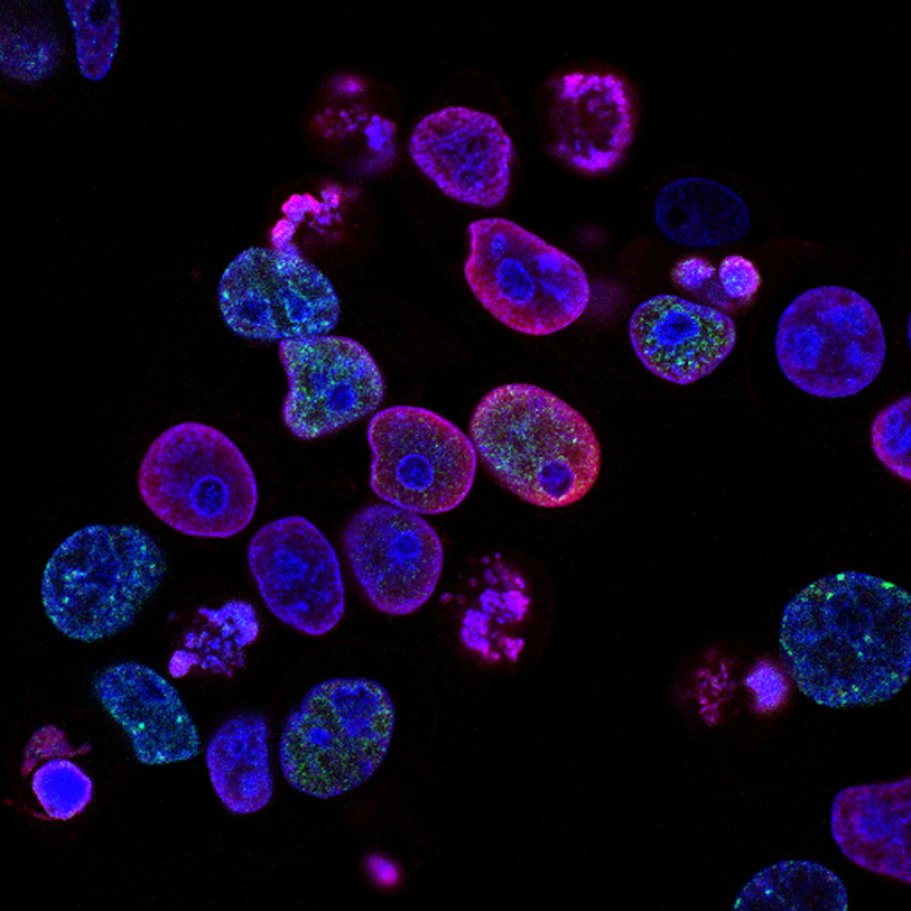

.png)
Claire Ruysschaert Développeuse web Python Django
Bienvenue sur
mon site de présentation !
PRESENTATION
Je suis actuellement en CDD à l’inserm en tant qu’assistante ingénieure d’étude (préavis 2 mois). J’ai découvert le langage python en mai 2022 en parallèle de mon travail. J’apprend au fil des jours en autodidacte, après le travail ou le week-end. Je développe actuellement mes compétences en Python sur le framework Django et j'ai réalisé de multiples leçons chez Openclassrooms. Plus tôt, j’ai étudié et pratiqué à l’aide du livre « Automate the boring stuff with python » qui contient des chapitres divers sur la programmation avec une leçon, un ou des parcours guidés, des questions pratiques et plusieurs projets pratiques (disponible sur mon github). J’ai choisi ce livre par curiosité et pour utiliser la programmation au quotidien afin d’automatiser des tâches répétitives que mes collègues auraient pu avoir au travail, ou encore pour travailler sur des requêtes logicielles. Je me suis rendue compte que le moment le plus plaisant de ma journée est le moment où je code pour réaliser mes projets.

C'est pourquoi aujourd'hui je souhaite rejoindre une entreprise en alternance, pour transformer ce loisir plaisir en un nouveau départ professionnel. J'aimerais apporter ma curiosité et ma détermination à une entreprise qui fera confiance à mon profil. J'ai toujours été habituée à apprendre de nouvelles choses en autonomie (études scientifiques longues avec rédaction de documents complexes en anglais, apprentissage du japonais en autodidacte). Découvrir de nouveaux langages ou technologies sera un nouveau challenge à ma liste que je ne prendrai pas à la légère! En formation chez Openclassrooms, les approches en "projets" permettent d'acquerir des compétences de manière active en réalisant des projets concrets. Je souhaite développer et acquérir un savoir faire pour devenir développeuse d'application Python.
POURQUOI ME FAIRE REJOINDRE VOTRE EQUIPE ?
- J'aime régler les problèmes et j'adore proposer de nouvelles idées.
- Je suis rigoureuse et disciplinée (sport depuis 10 ans, master en sciences).
- Je suis de nature joyeuse, positive et enthousiaste !
- J'adore rencontrer de nouvelles personnes, discuter et faire rire les autres.
- Je suis ouverte d'esprit et bienveillance, j'aime beaucoup les critiques constructives!
- J'aime créér des choses de mes petits doigts et suis patiente pour les réaliser.
FORMATIONS
Février 2023 - Parcours Développeur d’applications Python - Openclassrooms
- Environnements virtuels et PyCharm.
- Créations d’applications web en utilisant les frameworks Django et Django REST.
- Développer une base de données PostgreSQL sécurisée.
- Tests, débugs et remaniements d’applications
- Utiliser GitHub, Postman, HTML, CSS, JavaScript, CircleCI.
Janvier 2023 - Formations en autodidacte
- Livre interface utilisateur : Refactoring UI
- Formations Openclassrooms (Git/Github, HTML5, CSS3, javascript)
- Livre Django : Build websites with Python & Django
De Mai 2022 à Janvier 2023 - Automate The Boring Stuff With Python - Projets en accès libre sur mon github.
- Langage python, git/gitHub
- Expressions régulières, debugging
- Input validation PyInputPlus
- Lire, écrire et organiser des fichiers Path, shutil, zipfile
- HTML, CSS, Web scraping request, bs4, selenium
- Travailler avec les documents excel openpyxl, PDF, et word
- Modules CSV et JSON / API
- Planifier des tâches et lancer des programmes Time/datetime, multithreading
- Envoyer des mail et SMS Gmail API, SMTP, IMAP, Twilio
- Manipuler les images Pillow
De 2014 à 2019 - Licence sciences de la vie et Master Recherche Biologie Santé à l'Université de Lille. (Biologie cellullaire, moléculaire, physiologie, génétique, microbiologie, immunité et infection.)

LANGAGES ET LOGICIELS


PROJETS
Janvier 2023 - Site internet de présentation.
- Bootstrap
Janvier 2023 - Site internet de la photographe Robbie Lens - Openclassrooms
- Agencer le contenu des pages (Flexbox, CSS Grid, positions)
- Utiliser des fonctionnalités avancées de HTML et CSS (tableaux, formulaires)
- Responsive (Flexbox, @media queries)
Janvier 2023 - Webscraping - Parser du dernier chapitre de One piece et création d'un raccourci sur le bureau s'il est sorti.
- os, Time, Path, schedule, winshell
- bs4, requests
Novembre 2022 - Simulateur du 2048
- selenium
EXPERIENCES PROFESSIONNELLES (SCIENCES)

Depuis mars 2020 - Ingénieure d’étude sur les sarcomes des tissus mous (cancer), INSERM U1218 à l’institut Bergonié de Bordeaux – Projet MULTIPLI
- Gestion des prélèvements à visée de recherche dans le respect de l’éthique et de la réglementation
- Rédaction de modes opératoires, de documents qualité
- Participation au choix et à la validation de la technique de méthodes
- Compétences techniques en anapath et biologie moléculaire
8 mois (2018/2019) - Assistante de recherche sur la malaria, CIIL à l’institut Pasteur de Lille
- Optimisation de protocoles
- Tenue d’un cahier de laboratoire, traçabilité, présentation des résultats en anglais, rédaction d’un mémoire de recherche
- Compétences techniques biochimie et microbiologie
LANGUES PARLEES

CENTRES D'INTERETS
- Animés, Mangas, musique japonaise et styles de vie
- Langue
- Cuisine
- Architectures et paysages